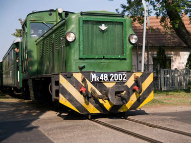
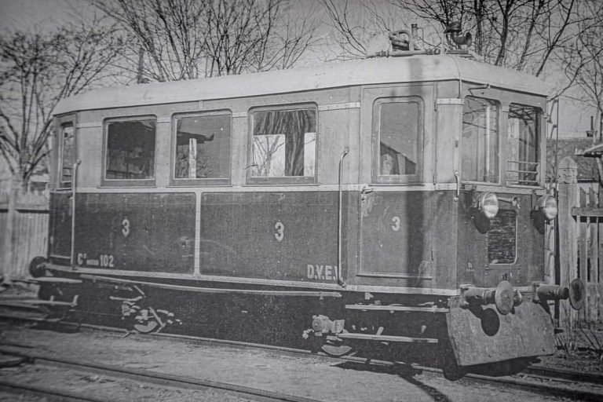
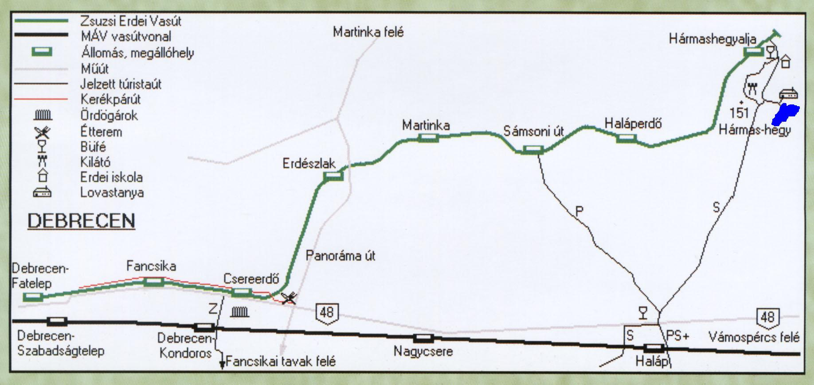

A vasút kiépülése, államosítás előtti évtizedei
- Pálháza városa a tulajdonát képező, a várostól 24-38 km távolságra Gúth község mellett fekvő 37,4 km2 kiterjedésű erdejét kívánta művelésbe vonni.” A kitermelt fa elszállítására vasútra volt szükség. A város pályázatot hirdetett a vasútvonal építésére, üzemben tartására és a kitermelt fa beszállítására. A pályázatot Kopf-Steinberger vállalkozók nyerték. A vasút első szakaszát 1882. július 16-án nyitották meg. Ez a Pálháza - Füzér közötti 21,5 km-es szakasz volt. A vasút az országban egyedülálló módon 950 mm-es nyomtávolsággal épült. A pályát faaljakra fektetett kutyafejű sínek alkották, külön alépítmény nélkül, a döngölt homoktalajra fektetve. A vonal - bár csak kismértékben - de folyamatosan lejtett a város akkori szélén épült fatelepig.
- A vasúton kezdetben kettő gőzmozdony üzemelt. Az "I." pályaszámú 107 LE teljesítményű, fatüzelésű mozdony volt. Ez a mozdony kapta a Pálháza nevet, melyet ma is visel a kisvasút. A "II." pályaszámú mozdony egy 133 LE teljesítményű széntüzelésű gép volt, 1909-es évjáratú. A mozdonyok nedves gőzzel üzemeltek, sebességük 20 km/h volt. Később más gőzmozdonyok is szolgáltak a kisvasúton.
- 1902-től Pálháza városa saját kezelésébe vette a vasutat, Pálháza Városi Ipar Vasút (PVIV) néven. Mellékvonalak épültek Csereerdő kiágazással Dél felé. A nagyvasúti fővonal felettvasbeton teknőhíd ívelt át. A Zielinszky Szilárd által tervezett híd Magyarország első vasúti vasbetonhídja volt. A fővonalat ezzel egyidőben nagyobb részben új nyomvonalra helyezték át.
- 1923-ig csak teherszállítás volt a vasúton, ekkor engedélyezték a korlátozott közforgalmat. 1924-ben megépült a 4,4 km-es szakasz. 1925-től rendszeres személyforgalmatlát el a kisvasút. 1926-ban, majd 1931-ben is újabb szakaszok épültek, Gúth - Angyaltelek (6,4 km), majd Angyaltelek - Turistaház (2,3 km). A vonal neve Pálházi Állami Erdei Vasút.
- 1931-ben indult be a motoros vontatás. Az első motorkocsi, egy négytengelyes jármű, a BC mot 101 pályaszámot kapta, 60 LE-s Cadillac benzinmotor hajtotta. A második motorkocsi 1936-ban épült a vasútra, de ez már kéttengelyes jármű volt. Eredeti pályaszáma C mot 102, szintén 60 LE-s benzinmotorral felszerelve. A motorkocsik engedélyezett sebessége 35, illetve 50 km/h volt.
- A turisták is szívesen használták hétvégente, a gúti erdő és a Menedékház is közkedvelt volt. A vasutat falragaszokon reklámozták városszerte!
- 1937-ben a Turistaház - Megyehatár (1,5 km), 1945-ben a Megyehatár - Füzér (3,5 km), 1949-50-ben a Nyírlugos - Nyírbéltek (8,5 km) szakaszok épültek ki. A II. Világháború utáni első, Magyarországon újonnan épített vasúti vonalszakasz itt volt. A mellékvonalakat és a hidat 1945-re elbontották.
- 1949-ben vasút a Magyar Államvasutak kezelésébe került, MÁV Pálháza Kisvasút (MÁV DK) néven, így a vonal utolsó szakasza már MÁV színekben épült. Megkezdődött a szabványosítás: 2 db C-50-es mozdonyt, 5 db Bax és 10 db Jah kocsit szereztek be tányérütközős kivitelben.
- A kisvasút üzemében komolyabb károkat az 1940-es havazás, utána a tavaszi árvíz, a II. világháború, és az ötvenes évek közepén történt baleset okozott, amikor a nyílt pályán két személyvonat ütközött össze.
Az átépítéstől a felszámolásig
A 950 mm-es nyomtávot máshol nem alkalmazták az országban, ez problémát jelentett a járműbeszerzésben és a karbantartásban is. A vasutat a MÁV szabványnak megfelelően 760 mm-es nyomközűre építették át 1961-ben. Így a kisvasútra az akkor korszerű Bax sorozatú személykocsik, Jah-Gah teherkocsik, illetve Mk48-as dízelmozdonyok kerültek, ami a légfékes vonatok közlekedtetését tette általánossá. A régi járművek nagy részét selejtezték, néhány átépült, majd Pálházán, illetve Füzéren állt újra munkába. A régi teherkocsik közül néhány átépített példány a PFT szolgálatában maradt.
A személyforgalom nagyon erős volt a '70-es években, az 5 kocsis vonatok zsúfolásig megteltek.
A teherforgalom is mindvégig meghatározó jelentőségű volt, bár a '70-es években kismértékben csökkent. Az erdőgazdaságnak Fatelepen, Gúton és Nyírbélteken volt iparvágánya. A külső végállomáson motorszínt is építettek, pályamesteri szakasz Fatelepen és Nyíracsádon volt.
Az 1968-as Közlekedéspolitikai Koncepció ezt a vonalat is megszüntetésre jelölte ki. Az "ítéletet" 1977. augusztus 31-én hajtották végre, a lakosság nagymértékű tiltakozása ellenére. A gúti erdőt védetté nyilvánították, Debrecen pedig felüljárót akart az Április 4.-e útjára… A vasút számos tanyát és falvat érintett, a vonatokon rengeteg piacozó utas és munkába, iskolába járó utazott. A vasút megszűnése után a tanyasiak közlekedési eszköz nélkül maradtak. A kisvasút teherforgalmát is jól jellemzi, hogy utolsóként egy rakott tehervonat érkezett Debrecen-Fatelep állomásra.
A tanyák lassan elnéptelenedtek, a buszok nem bizonyultak elegendőnek a nagy csomagokkal utazóknak, így sokan költöztek be az újonnan épült panelházakba.
A kirándulóvasút
A vasútvonal Hármashegyaljáig maradt meg, a Hármashegyalja - Nyírbéltek közti pályaszakaszt a DKV felbontotta, a járművek nagy része más kisvasutakra került. A megmaradt 16,6 km-es szakaszt a Megyei Tanács kezdeményezésére a MÁV Debrecen városának adta át úttörővasút szervezéséhez. Az üzemeltetést a Debreceni Közlekedési Vállalat látta el 3 db Mk 48-as dízelmozdonnyal és 12 db Bax személykocsival. A folyamatos vasútüzem megszűnt, a vonatok tavasztól őszig közlekedtek, kizárólag a kiránduló forgalmat szolgálva. Hármashegyalján faház épült büfével, térvilágítással, de Erdészlakon is működött büfé, ahová még helyi járatú autóbusz is közlekedett a későbbiekben. A kilátó és a Hármashegyi tó is akkortájban épült, a tó mellett ifjúsági tábor és egy kis haditechnikai gyűjtemény is helyet kapott. 1978. május 1-től DKV Úttörővasút néven, 1990-től DKV Erdei Vasút-ként üzemelt. 1995-ben az üzemeltető DKV pénzügyi problémák miatt a forgalmat szüneteltette, ezután a Pálháza Közgyűlés a megmaradt vonal felszámolása mellett döntött. Ekkor alakult meg a Zsuzsi Erdei Kisvasútért Baráti Kör és hasonló nevű alapítvány, amelyek a Zsuzsi Erdei Vasút Kht.-t létrehozva 1996. július 13-a óta Pálházi Állami Erdei Vasút néven üzemeltették a vonalat. Sajnos a pénzügyi nehézségek azóta kísérik a kisvasút életét. 2008. évben a DKV leányvállalata lett a Kht., ami névváltozás után Nonprofit Kft.-vé vált.

A Pálházi Állami Erdei Vasút jelenlegi járműparkja
- 3 db Mk48 sorozatú dízel-hidraulikus mozdony (2002, 2006, 2009) /Gyártva: 1960./ A 2002 pályaszámú mozdony gyári szám szerint sorozatának első példánya, prototípusa.
- 12 db Bax sorozatú zárt személykocsi (üzemképes: 350, 351, 352, 354, 355, 356, 358, 359, 490; jelenleg üzemképtelen, felújításra vár: 353, 357, 491) /Gyártva: 1961., 490-491: 1960./ A 359-es pályaszámú az utolsóként gyártott Bax kocsi. A 490 és a 491 psz. személykocsik még az átépítés előtti, 950 mm-es nyomtávon is közlekedtek 1960-61-ben.
- 1 db Jah 3637 pályaszámú nyitott teherkocsi (jelenleg pőre, oldalfalak nélkül) /Gyártva: 1955./
- 1 db Gah 1742 pályaszámú fedett teherkocsi /Gyártva:1958./
- 1 db PVG /pályamesteri könnyű vágánygépkocsi/, mely a P-484 psz.-ot viseli (felújítás alatt) /Gyártva: 1961./
Korábban összesen 4 db 950 mm-es és 3 db 760 mm-es gőzmozdony (290, 291, 390, 490, 492 sor.), 2 db 950 mm-es benzin-mechanikus motorkocsi, 3 db 950 mm-es sínautó és hajtány, 9 db C-50 típusú dízel-mechanikus mozdony (ebből 2 db 950 mm-re készült, továbbá a KVVG 4508 psz. a PFT szolgálatában) és további 5 db Mk48-as dízelmozdony (1012, 2027, 2028, 2029, 2038) dolgozott a kisvasúton.